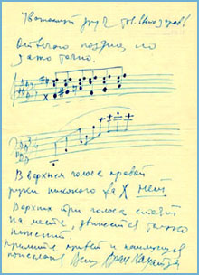
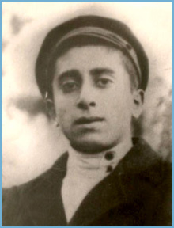

Biography
Aram Khachaturian is celebrated as one of the defining Armenian composers of the 20th century. His music brought together the expressive energy of Armenian and Eastern traditions with the formal power of the symphonic tradition.
The original CD-ROM project presented his life through letters, photographs, biographies, contemporaries’ memories, video, and music. This web version preserves that spirit while making the content easier to browse and share online.
Key milestones
1903
Born in Tiflis, in the cultural environment that shaped his early artistic development.
1930s
Developed his distinctive voice through orchestral and chamber works.
1940s–50s
Gained international recognition with major works that became central to the repertoire.
Legacy
His music remains a bridge between Armenian identity and global symphonic culture.
Legacy gallery


Media highlights
Audio samples and archive material can be added here as the project grows.